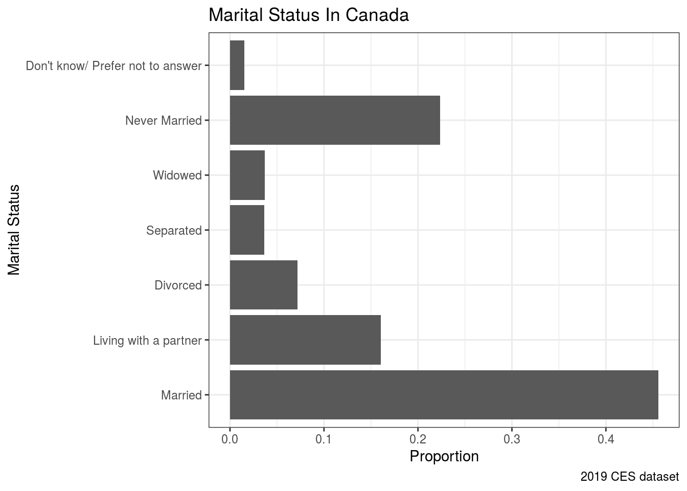

# install.packages("devtools")
# devtools::install_github("hodgettsp/cesR")
library(tidyverse)Link for Github: https://github.com/liyanto1/Assignment1
Abstract
In 2019 Canadian Election Survey, we find the distribution of Marital Status. Most of people are married or living with partners but with high divorced rate. Single people are also accounts for a relatively large proportion.
Introduction
In 2019, 37822 Canadian residents have effectively participated Canadian Election Survey. Among these information, we can obtain the Marital Status of each participant and find most people are currently married or/and living with their partners.
Based on the dataset, we find that the vast majority of Canadians are non-single, but the divorced rate (including people who are separated) is significantly high. Additionally people who living by themselves also taking a large proportion of the population.
In this paper, we will provide a detailed analysis of Canadian Marital status including a statistical summary and plot with further discussion. Response error might be one of our weaknesses, in the future, more data should be collected and further analysis related to different age groups will be done.
cesR::get_decon()
## TO CITE THIS SURVEY FILE: Stephenson, Laura B; Harell, Allison; Rubenson, Daniel; Loewen, Peter John, 2020, '2019 Canadian Election Study - Online Survey',
## https://doi.org/10.7910/DVN/DUS88V, Harvard Dataverse, V1
## LINK: https://dataverse.harvard.edu/dataset.xhtml?persistentId=doi:10.7910/DVN/DUS88VData
The CES dataset was collected during the Campaign Period Survey: September 13th to October 21st, 2019, and Post-election survey: October 24th to November 11th, 2019. Originally, there are 620 variables and 37822 observations are available, the dataset we are using is the cleaned dataset that contains 22 variables and 37822 observations. Moreover, people who participated the survey are all aged over 18. In this dataset, the non-response problem commonly exists, and for this assignment, I choose the Marital Status since almost everyone has provided the answer to that question.
head(decon)
## # A tibble: 6 x 22
## ces_code citizenship yob gender province_territ… education lr lr_bef
## <chr> <fct> <fct> <fct> <fct> <fct> <chr> <chr>
## 1 ces2019… Canadian c… 1989 A wom… Quebec Master's… 2 <NA>
## 2 ces2019… Canadian c… 1998 A wom… Quebec Master's… 2 <NA>
## 3 ces2019… Canadian c… 2000 A wom… Ontario Some uni… 4 4
## 4 ces2019… Canadian c… 1998 A man Ontario Some uni… 7 7
## 5 ces2019… Canadian c… 2000 A wom… Ontario Complete… 4 4
## 6 ces2019… Canadian c… 1999 A wom… Ontario Some uni… 4 4
## # … with 14 more variables: lr_aft <chr>, religion <fct>,
## # sexuality_selected <fct>, sexuality_text <chr>, language_eng <fct>,
## # language_fr <fct>, language_abgl <fct>, employment <fct>, income <dbl>,
## # income_cat <fct>, marital <fct>, econ_retro <fct>, econ_fed <fct>,
## # econ_self <fct>Variable Analysis
The variable we focus on is Marital Status, overall there 37822 - 573 = 37249 people has provided information about their marriage.
From the summary statistics for this variable:
decon %>% group_by(marital) %>% summarise(counts = n(), proportion = counts/nrow(decon)) %>% arrange(desc(proportion))
## `summarise()` ungrouping output (override with `.groups` argument)
## # A tibble: 7 x 3
## marital counts proportion
## <fct> <int> <dbl>
## 1 Married 17230 0.456
## 2 Never Married 8458 0.224
## 3 Living with a partner 6070 0.160
## 4 Divorced 2722 0.0720
## 5 Widowed 1395 0.0369
## 6 Separated 1374 0.0363
## 7 Don't know/ Prefer not to answer 573 0.0151A Barplot about the Canadian Marital Status.
decon %>% ggplot(aes(x = marital)) + geom_bar(aes(y = ..prop.., group = 1)) + coord_flip() + theme_bw() + labs(x = "Marital Status", y = "Proportion", title = "Marital Status In Canada", caption = "2019 CES dataset") 
Graph Discussion
In this graph, we find the most frequent status of marriage in the dataset is “Married” (nearly 50%). the next most frequent status of marriage is “Never Married” (over 20%), and followed by “Living with a partner” (15%). People who fall in other category has relatively less proportion over the population.
Discussion
If we can combine “Married” and “Living with a partner”, we will see the vast majority (around 60%) are currently accommodated with their spouse. Similar logic, people who are “Divorced” or “Separated” are taking 10.83 % of the population. Comparatively, people who are “Divorced” or “Separated” have taken a heavy proportion over the entire population.
Many are saying Canada has relatively higher divorce rates over other countries, this statement definitely can be supported by our dataset and discussion above. Furthermore, there are approximately 40% of people are currently living on their own. It might be shocking from our common understanding; single people are surprisingly higher than my expectation.
Weaknesses and next steps
The self-report method has been used for the survey. One of our weaknesses is response error, people might not honestly provide their marriage status. In the next steps, more data should be collected so that we can reduce the response error; marital status can be further analyzed within different age categories which can provide us a better understanding of Canadian marriages.
References
- Stephenson, Laura B; Harell, Allison; Rubenson, Daniel; Loewen, Peter John, 2020, ‘2019 Canadian Election Study - Online Survey’, https://doi.org/10.7910/DVN/DUS88V, Harvard Dataverse, V1
- Paul A. Hodgetts and Rohan Alexander (2020). cesR: Access the CES Datasets a Little Easier.. R package version 0.1.0.
- Hadley Wickham, Jim Hester and Winston Chang (2020). devtools: Tools to Make Developing R Packages Easier. https://devtools.r-lib.org/,https://github.com/r-lib/devtools.
- R Core Team (2020). R: A language and environment for statistical computing. R, Foundation for Statistical Computing, Vienna, Austria. URL, https://www.R-project.org/.
- JJ Allaire and Yihui Xie and Jonathan McPherson and Javier Luraschi and Kevin Ushey and Aron Atkins and Hadley Wickham and Joe Cheng and Winston Chang and Richard Iannone (2020). rmarkdown: Dynamic Documents for R. R package version 2.3. URL https://rmarkdown.rstudio.com.